Linear Regression (A Brief Review)
Brandon M. Greenwell, PhD
University of Cincinnati
About me
A useful quote to remember
All models are wrong, but some are useful.
-George Box
Ames housing data
- Data describing the sale of individual residential property in Ames, Iowa from 2006 to 2010
- There are 2930 observations on 81 variables involved in assessing home values:
- 23 nominal
- 23 ordinal
- 14 discrete
- 20 continuous
- Paper: https://jse.amstat.org/v19n3/decock.pdf
Ames housing data
Ames housing data
We’ll focus on a handful of variables:
Sale_Price- Sale price of the house / $10K (response variable)Gr_Liv_Area- Above grade (ground) living area square feetOverall_Qual⁠- Rates the overall material and finish of the house
Inference for a single variable
- Is it useful to test the hypothesis that
Sale_Price= $160K?
- No! Because
Sale_Priceis not a constant, but a random variable whose value varies from home to home (and year to year, etc.)
We’re more interested in questions such as:
- What is the chance that
Sale_Price> $160K? (above median sale price) - What is the chance that
Sale_Price< $105K? (lowest decile) - What is the chance that $129,500 <
Sale_Price< $213,500? (within IQR)
- What is the chance that
Distribution of Sale_Price
Can look at historgram and empirical CDF:
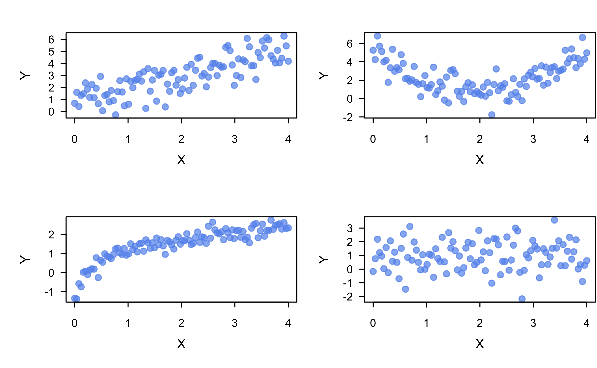Distribution of Sale_Price
- Histograms and ECDFs are nonparammetric in nature
- A simple parametric approach might assume a particular distribution for
Sale_Price - For instance, we might assume
Sale_Price\(\sim N\left(\mu, \sigma^2\right)\) - How can we estimate \(\mu\) and \(\sigma^2\)?
- Is the normal distribution a reasonable assumption here?
Normal QQ plot
Normal quantile-quantile (Q-Q) plot* can be used to asses the “normalityness” of a set of observations
Q-Q plots can, in general, be used to compare data with any distribution!
Normality tests ü§Æ
Normality tests, like the Shapiro-Wilk1 and Anderson-Darling tests, can also be used to assess normality
- I STRONGLY ADVISE AGAINST USING THEM!
No data is normally distributes, what we care about is whether enough a normal approximation is close enough!
Normality tests provide a \(p\)-value, which only gives a yes/no conclusion
Normality tests ü§Æ
Recall that \(p\)-values are a function of sample size!
Show R code
# Shapiro-Wilk test results vs. sample size
set.seed(101) # for reproducibility
x <- replicate(100, c(
shapiro.test(rt(10, df = 40))$p.value,
shapiro.test(rt(100, df = 40))$p.value,
shapiro.test(rt(500, df = 40))$p.value,
shapiro.test(rt(1000, df = 40))$p.value,
shapiro.test(rt(2500, df = 40))$p.value,
shapiro.test(rt(5000, df = 40))$p.value
))
rownames(x) <- paste0("n=", c(10, 100, 500, 1000, 2500, 5000))
rowMeans(x < 0.05) n=10 n=100 n=500 n=1000 n=2500 n=5000
0.01 0.08 0.11 0.22 0.24 0.39 Normality tests ü§Æ
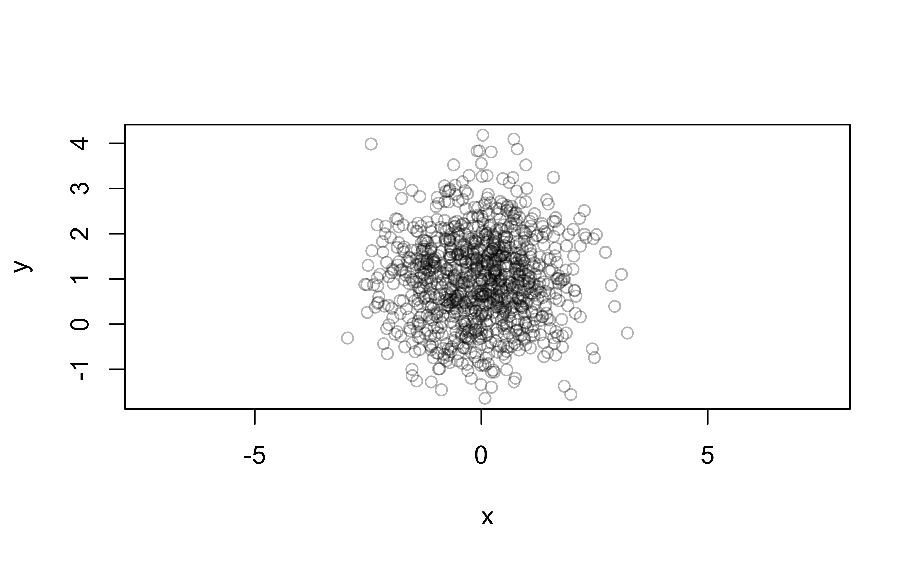Are these two distributions significantly different?
Are these two distributions practically different?
Is linear regression reasonable here?

Is linear regression reasonable here?
What can we do if the normality assumption isn’t justified?
Try transformations
- Logarithm or square root for positive data
- Power transformation (like the well-known Box-Cox procedure)
Try a more appropriate distribution (e.g., Poisson or gamma distribution)
Try more advanced approaches, like the nonparametric bootstrapping!
Modeling the mean response
- Assume that \(Y \sim N\left(\mu, \sigma^2\right)\), where
\[\mu = \mu\left(x\right) = \beta_0 + \beta_1 x = E\left(Y|x\right)\]
- In other words: \(Y \sim N\left(\beta_0 + \beta_1 x, \sigma^2\right)\)
- Alternatively, we could write \(Y = \beta_0 + \beta_1 x + \epsilon\), where \(\epsilon \sim N\left(0, \sigma^2\right)\)
- This is called the simple linear regression (SLR) model
The idea behind SLR

Arsenic experiment example
Least squares (LS) estimation
Idea of LS is to find \(\beta_0\) and \(\beta_1\) so that the sum of squared residuals (i.e., errors) is minimized: \[SSE = \sum_{i=1}^n\left(y_i - \beta_0 - \beta_1x_i\right)^2\]
Pretty straightforward optimization problem that leads to closed-form solution (but no point in memorizing the formulas!)
Concept of LS estimation

Sale_Price and Gr_Liv_Area
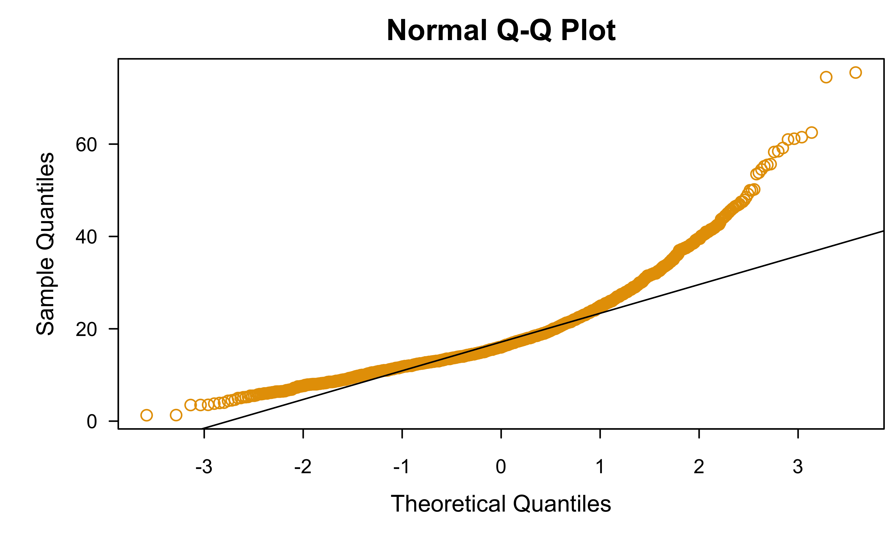SLR fit
Call:
lm(formula = Sale_Price ~ Gr_Liv_Area, data = ames)
Residuals:
Min 1Q Median 3Q Max
-48.347 -3.022 -0.197 2.273 33.432
Coefficients:
Estimate Std. Error t value Pr(>|t|)
(Intercept) 1.3289634 0.3269703 4.064 4.94e-05 ***
Gr_Liv_Area 0.0111694 0.0002066 54.061 < 2e-16 ***
---
Signif. codes: 0 '***' 0.001 '**' 0.01 '*' 0.05 '.' 0.1 ' ' 1
Residual standard error: 5.652 on 2928 degrees of freedom
Multiple R-squared: 0.4995, Adjusted R-squared: 0.4994
F-statistic: 2923 on 1 and 2928 DF, p-value: < 2.2e-16Is this a good fit?
Which assumptions seem violated to some degree?
Residual diagnostics
- The standard residual is defined as \(e_i = y_i - \hat{y}_i\) and can be regarded as the observed error
- The residuals hold a lot of properties that make them useful for diagnosing potential issues with the model (e.g., suggesting potential transformations to try)
- Many other kinds of residuals exist for different purposes (e.g., standardized, studentized, jackknife or PRESS residuals, etc.)
Properties of the residuals
\(\sum_{i=1}^n e_i = 0\) (Why?)
\(\sum_{i=1}^n e_i^2\) is a minimum
\(\sum_{i=1}^n X_ie_i = 0\)
\(\sum_{i=1}^n \hat{Y}_ie_i = 0\)
The LS regression line passes through the point \(\left(\bar{X}, \bar{Y}\right)\) (i.e., the center of the training data)
What can residual plots tell us?
Residuals vs. predictor values (checking non-linearity).
Residuals vs. fitted values (non-constant variance, non-linearity, and outliers)
Residuals vs. time or another sequence (checking independence)
Residuals vs. omitted predictor values (missing potentially important predictors)
Normal QQ plot of residuals (non-normality).
And much, much more!
Residual analysis for Sale_Price ~ Gr_Liv_Area
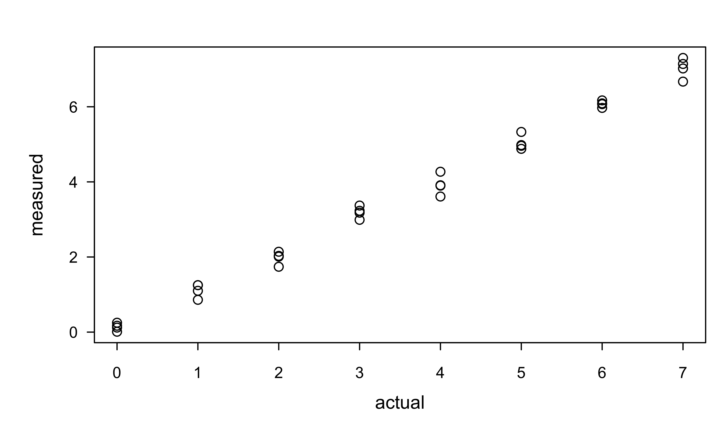What assumptions appear to be in violation?
Let’s try a log transformation
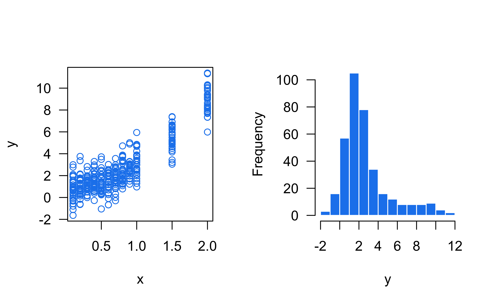Let’s try a log transformation
Call:
lm(formula = log(Sale_Price) ~ Gr_Liv_Area, data = ames)
Residuals:
Min 1Q Median 3Q Max
-2.36215 -0.15145 0.03091 0.16583 0.90332
Coefficients:
Estimate Std. Error t value Pr(>|t|)
(Intercept) 1.9692014 0.0169355 116.28 <2e-16 ***
Gr_Liv_Area 0.0005611 0.0000107 52.43 <2e-16 ***
---
Signif. codes: 0 '***' 0.001 '**' 0.01 '*' 0.05 '.' 0.1 ' ' 1
Residual standard error: 0.2928 on 2928 degrees of freedom
Multiple R-squared: 0.4842, Adjusted R-squared: 0.484
F-statistic: 2749 on 1 and 2928 DF, p-value: < 2.2e-16Residual analysis for log(Sale_Price) ~ Gr_Liv_Area
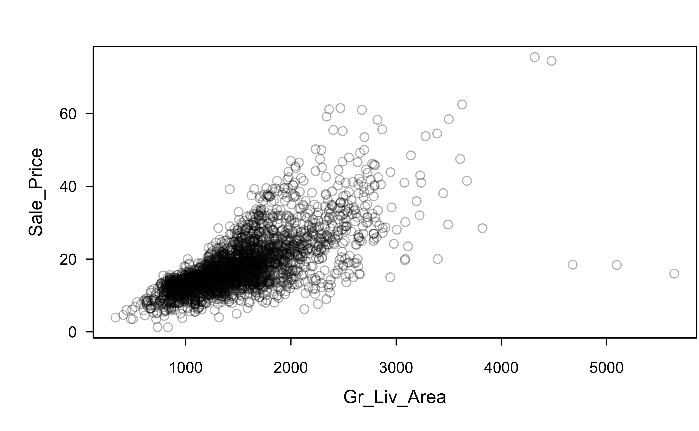Any better?
Multiple linear regression (MLR)
The (normal) multiple linear regression model assumes \(Y \sim N\left(\mu\left(\boldsymbol{x}\right), \sigma^2\right)\), where \[\mu\left(\boldsymbol{x}\right) = \beta_0 + \sum_{i=1}^p \beta_i x_i = \boldsymbol{x}^\top\boldsymbol{\beta}\]
LS estimation still provides unbiased estimate of \(\boldsymbol{\beta} = \left(\beta_0, \beta_1, \dots, \beta_p\right)^\top\): \(\hat{\boldsymbol{\beta}} = \left(\boldsymbol{X}^\top\boldsymbol{X}\right)^{-1}\boldsymbol{X}^\top\boldsymbol{y}\)
Fitted values: \(\hat{\boldsymbol{y}} = \boldsymbol{X}\left(\boldsymbol{X}^\top\boldsymbol{X}\right)^{-1}\boldsymbol{X}^\top\boldsymbol{y} = \boldsymbol{H}\boldsymbol{y}\)
\(\boldsymbol{H}\) is the well-known “hat matrix”
Polynomial regression
Polynomial regression is just a special case of the MLR model
A second order model in a single predictor: \[Y = \beta_0 + \beta_1 X + \beta_2 X^2 + \epsilon\]
A k-th order model in a single predictor (Typically \(k \le 3\)): \[Y = \beta_0 + \sum_{j=1}^k\beta_j X^j + \epsilon\]
Example: paper strength data
Data concerning the strength of kraft paper and the percentage of hardwood in the batch of pulp from which the paper was produced.
Example: paper strength data
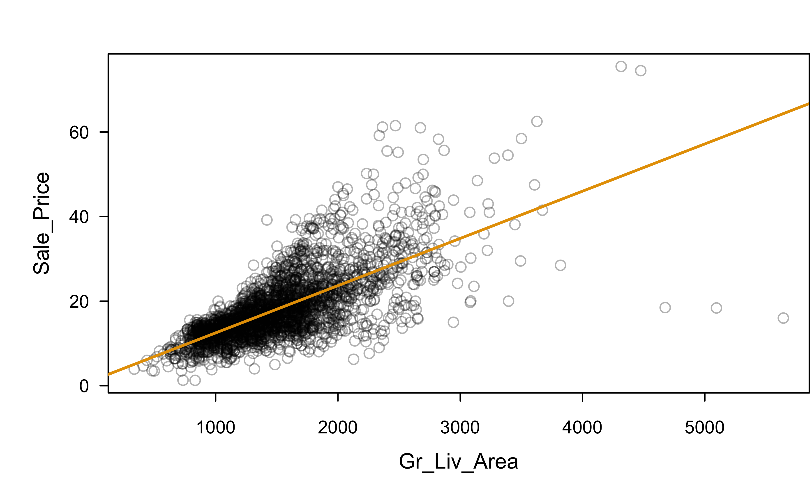Example: paper strength data
Example: paper strength data
Show R code
Example: paper strength data
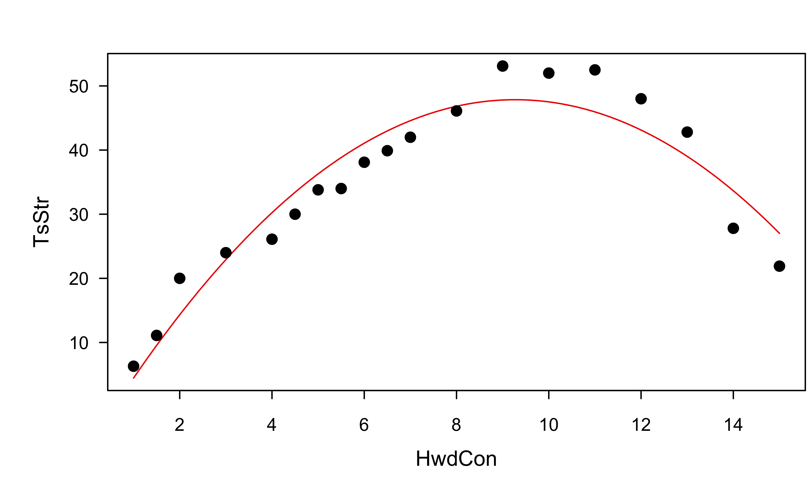Example: paper strength data
Example: paper strength data
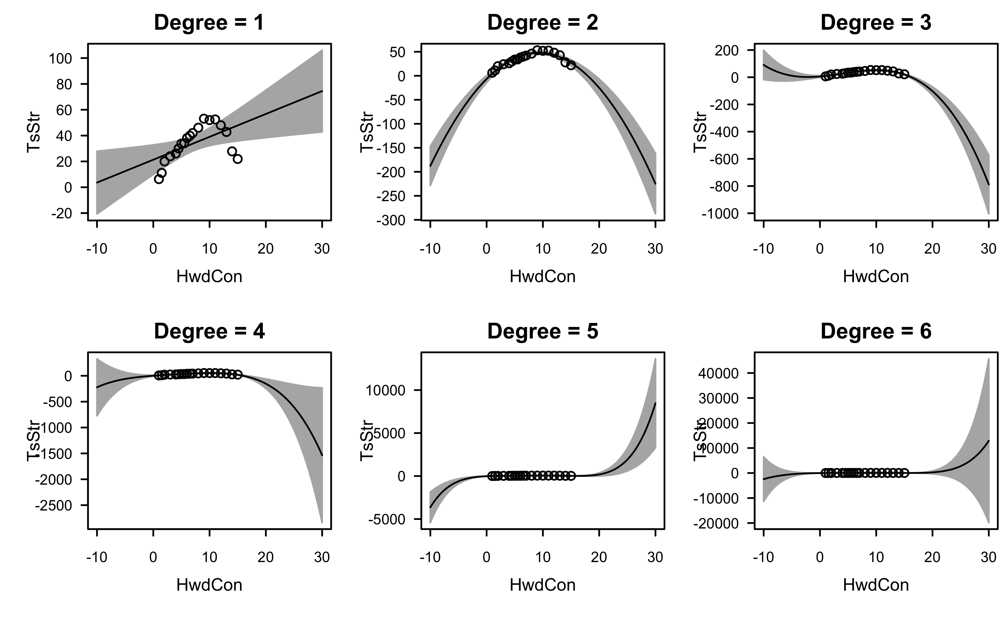Polynomial regression
Some cautions ⚠️
Keep the order of the model as low as possible
Avoid interpolating the data or over fitting
Use the simplest model possible to explain the data, but no simpler (parsimony)
An \(n - 1\) order model can perfectly fit a data set with \(n\) observations (Why is this bad ü§î)
Polynomial regression
Two model-building strategies:
Fit the lowest order polynomial possible and build up (forward selection)
Fit the highest order polynomial of interest, and remove terms one at a time (backward elimination)
These two procedures may not result in the same final model
Increasing the order can result in an ill-conditioned \(\boldsymbol{X}^\top\boldsymbol{X}\) and multicollinearity
Categorical variables
Categorical variables can be handled in a number of ways in linear models, including
- Dummy encoding (nominal)
- Orthogonal polynomials (ordinal)
Categorical variables
Let’s look at two (nominal) categorical variables:
Categorical variables
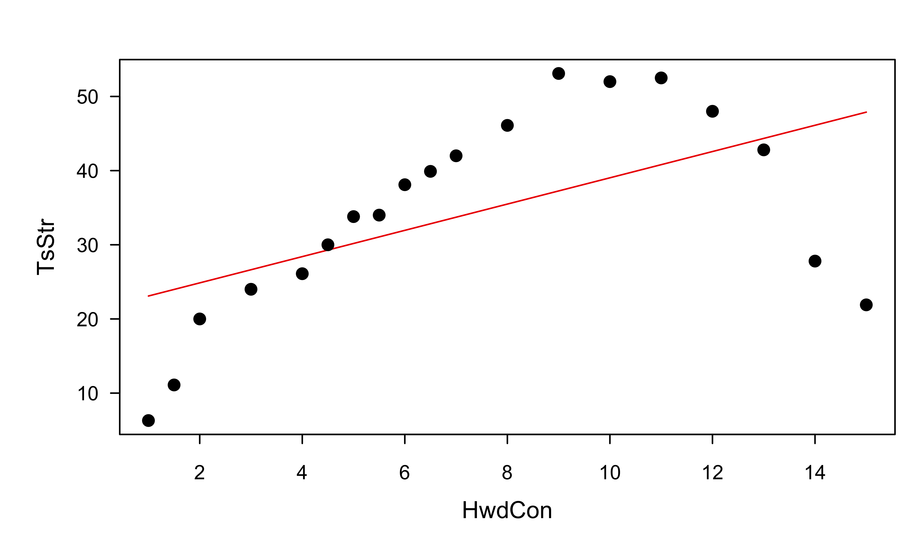Categorical variables
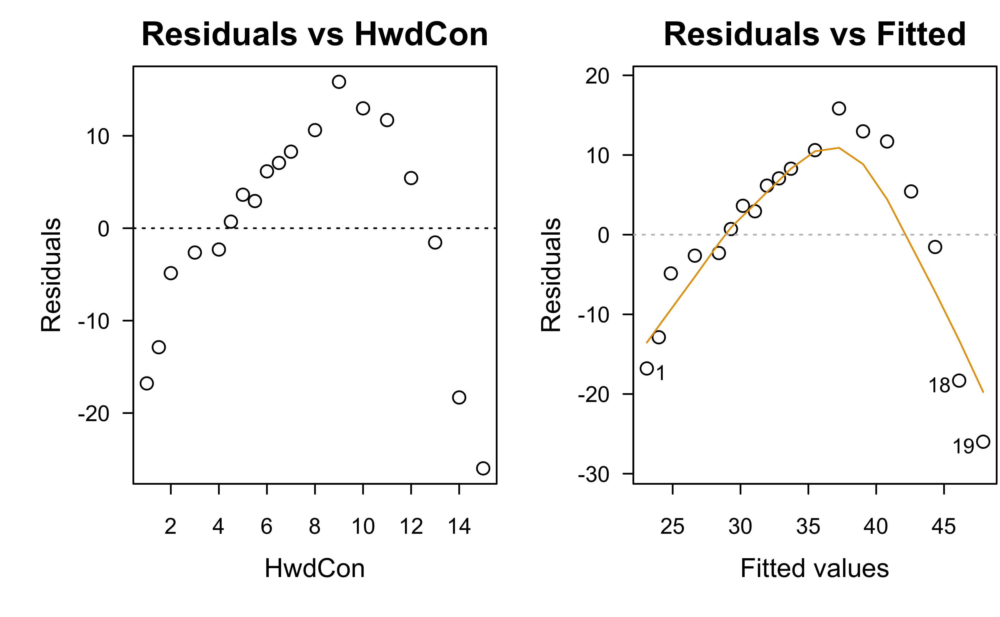If one of these homes downgraded from a paved driveway to a gravel driveway, would that cause the sale price to decrease? (Think very carefully here!)
Categorical variables
R dummy encodes nominal factors by default:
Show R code
Call:
lm(formula = log(Sale_Price) ~ Gr_Liv_Area + Central_Air + Paved_Drive,
data = ames)
Residuals:
Min 1Q Median 3Q Max
-2.2344 -0.1345 0.0073 0.1453 0.8502
Coefficients:
Estimate Std. Error t value Pr(>|t|)
(Intercept) 1.428e+00 2.418e-02 59.059 < 2e-16 ***
Gr_Liv_Area 5.183e-04 9.520e-06 54.440 < 2e-16 ***
Central_AirY 3.464e-01 2.068e-02 16.747 < 2e-16 ***
Paved_DrivePartial_Pavement 1.334e-01 3.733e-02 3.574 0.000358 ***
Paved_DrivePaved 3.085e-01 1.975e-02 15.618 < 2e-16 ***
---
Signif. codes: 0 '***' 0.001 '**' 0.01 '*' 0.05 '.' 0.1 ' ' 1
Residual standard error: 0.2574 on 2925 degrees of freedom
Multiple R-squared: 0.6018, Adjusted R-squared: 0.6013
F-statistic: 1105 on 4 and 2925 DF, p-value: < 2.2e-16How do you interpret the coefficients here?
Coefficient of determination
The coefficient of determination is the proportion of the variance in the dependent variable that is predictable from the independent variables in the model.
R-squared (\(R^2\))
\(R^2 = \frac{SSR}{SST} = 1 - \frac{SSE}{SST}\)
\(R^2\) will always increase as more terms are added to the model!
Adjusted R-squared (\(R_{adj}^2\))
\(R_{adj}^2 = 1 - \frac{MSE}{SST/\left(n - 1\right)}\)
Penalizes \(R^2\) if there are “too many” terms in the model
\(R_{adj}^2\) and \(MSE\) provide equivalent information
Variable/model selection
- Variable/model selection is a very noisy problem! (Often best to avoid, if feasible)
- Ask the domain experts about important variables (don’t just rely on algorithms)
- P(selecting the “right” variables) = 0 (source)
- “All
modelssubsets of variables are wrong, but some are useful!” - In regression settings, regularization (e.g., ridge regression and the LASSO) is often more useful! (Think about the impact of multicollinearity on variable selection)
Data splitting
If prediction is the goal (e.g., compared to inference and hypothesis testing), the model performance should be assessed rigorously
Data splitting techniques ae key and the type of data splitting to use often depends on the situation (e.g., cross-sectional vs. time-series data)
In simplest terms, random split the data into two parts: A and B. Build a model on part A and see how well it does with predicting the response in part B.
Leakage is a huge concern here, so data splitting ALWAYS has to be done carefully!
Data splitting: \(k\)-fold cross-validation

The PRESS statistic in linear regression is a special case (\(k = n\)) we get for free!
Questions?

BANA 7042: Statistical Modeling